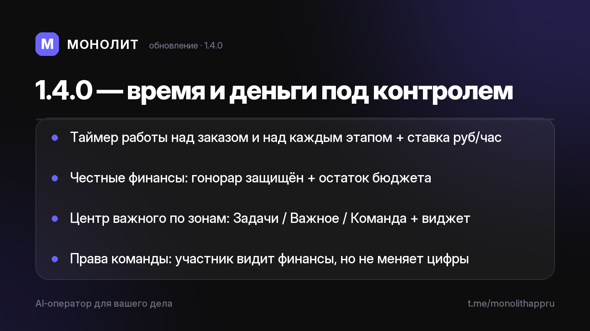

Дневник разработки · 09.07.2026
Время и деньги под контролем (1.4.0)

Обновление 1.4.0 ⏱️💸
Большая сборка про то, за что креатору обиднее всего терять — время и деньги.
Режим работы над заказом
Включи таймер прямо в карточке проекта — приложение считает, сколько ты реально работал над заказом и над каждым его этапом, и показывает ставку руб/час. Никаких сторонних трекеров: аналог ManicTime живёт внутри.
Честные финансы
Наш гонорар теперь отдельно от бюджета клиента. У каждого расхода — выбор «плачу я / платит клиент», а на пропускном заказе виден «Остаток бюджета», который можно перераспределить. Гонорар больше не уходит в минус из-за расходов заказчика.
Центр важного — по полкам
Раньше была одна лента, теперь три зоны: Задачи (что горит и предстоит), Важное (сигналы), Команда (на ком висят горящие этапы). Плюс заблаговременные напоминания и «первые шаги» проекта сразу после создания. Виджет на рабочем столе показывает, что горит.
Права команды
Обычный участник видит финансы, но не меняет их — твои цифры под защитой.
Приватность прежняя: сервер видит только зашифрованные данные, ключ остаётся у тебя.
Бета — в личку по запросу, бесплатно. Приложение в RuStore (1.4.0 на модерации). Вопросы — @sbphotoshoter.
МОНОЛИТ — учёт заказов, клиентов и денег одной фразой. Windows и Android, бесплатная бета.
Скачать Читать канал